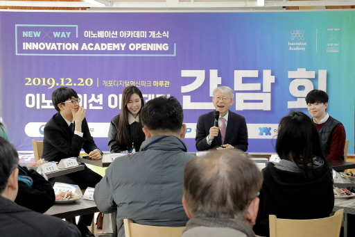
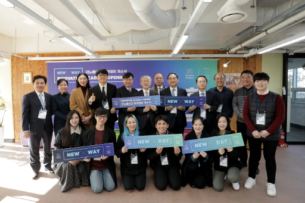

제1장 설립
이노베이션 아카데미(IA)
1. 정부단계
1) 추진 배경
ο 세 가지 배경
2018년 당시, 정부가 이노베이션 아카데미를 설립하고자 하는 배경은 크게 세가지였다. 첫째, 혁신성장 가속화를 위해 아키텍트급 소프트웨어 인재양성 필요성이다. 4차 산업혁명 시대를 대비하고 인공지능(AI), 빅데이터 등 혁신성장 가속화를 위해서는 세계수준의 소프트웨어 인재 양성이 필요했다. 아키텍트급 인재란 최적의 소프트웨어 개발 전략 수립 및 소프트웨어 구성요소 관계를 설계 및 구현하는 리더급 엔지니어를 말한다. 이미 미국과 프랑스 등 해외 주요국의 경우 4차 산업혁명 시대에 요구되는 혁신적인 인재양성을 위해 새로운 형태의 교육모델을 제시하고 운영 중에 있다. 미국은 ‘미네르바 스쿨’을 2011년에, 프랑스는 ‘에꼴42’를 2013년에, 중국은 ‘국가시범성소프트웨어학원’을 2010년에 설립하여 운영하고 있다. 둘째, 혁신적인 소프트웨어 교육 패러다임 대전환 필요성이다. 그동안 우리나라는 획일적 교육시스템 등으로 혁신성장의 기반이 되는 국내 인재 경쟁력은 인공지능(AI), 빅데이터 등 주요 분야에서 선진국에 뒤처진 상황이다. 2017년 국가인재 경쟁력지수 순위는 홍콩 12위, 싱가포르 13위, 일본 31위에 비해 한국은 39위에 그치고 있다. 미국과 비교하면 인공지능은 2.3년, 사물인터넷(lot)은 1.2년, 빅데이터 및 클라우드는 1.8년, 3D프린팅은 2.6년의 격차가 나고 있다. (2017년) 그동안 우리나라는 대학지원 사업 등을 통해 소프트웨어 교육 쇄신을 유도하고 있으나, 여전히 기존 교육방식으로 평범한 소프트웨어 인력만 배출하는 상황이 지속되고 있다. 국내 소프트웨어 개발자의 88.4%가 초중급 인력이고 고급 개발자(아키텍트급)는 4%에 불과하다. (2017년) 셋째, 단기 성과주의 폐해 단절을 위해 정부주도의 지속적 지원 방식 필요성이다. 최근 들어 민간 분야에서 혁신적인 소프트웨어 교육을 추진하고 있으나, 단기성과 위주의 교육운영으로 교육 프로그램은 축소되거나 소멸되는 상황이다. 2016년 NHN NEXT의 1기 및 2기 신입생은 90명이었지만 3기 신입생은 12명으로 80% 이상 감소했다. 삼성소프트웨어멤버십은 아예 정기 공채를 폐지했다. 세계 최고의 아키텍트급 소프트웨어 인재를 양성하기 위해서는 실패를 용인하고 혁신적인 교육 프로그램을 운영할 수 있는 정부주도 방식의 교육이 필요했다.ο 국내 주요 소프트웨어 교육 현황
그동안 민간이나 공공에서 진행되었거나 진행되고 있는 국내 소프트웨어 교육 및 지원 사례는 다음과 같다. 첫째, 소프트웨어 중심대학이다. 정부는 2015년부터 2019년까지 소프트웨어 전공교육 강화와 융합교육 의무화 등을 통해 학부생 중심 소프트웨어 실무인력 양성을 위해 총 40개 대학(’15년 8개, ’16년 6개, ’17년 6개, ’18년 10개, ’19년 10개)을 선정했다. 소프트웨어 중심대학에 선정된 대학은 연간 약 20억 원을 소프트웨어 전공, 융합전공, 전교생 소프트웨어 교육에 지원받는다. 둘째, 소프트웨어 마에스트로 제도다. 2010년부터 일반인을 대상으로 소프트웨어 분야 전문가들의 집중 멘토링 및 심화교육을 통해 소프트웨어 고급인력 양성에 연간 75억 원을 지원했다. 졸업생 107명이 설립한 창업기업(105개社)의 총고용인원은 643명으로 평균 고용인원은 6명이다. 일반 대학생 창업기업 평균 고용인원 1.6명보다 3.7배 높게 나타났다. 매년 100명의 교육생을 선발하여 6개월간 교육시켜 2019년까지 총 1,006명의 수료생을 배출했다. 셋째, 정보통신기술(ICT)멘토링 제도다. 2004년부터 추진된 ICT·소프트웨어 실무형 인재양성 사업으로 대학생 대상으로 실무중심의 프로젝트 멘토링 교육과정이다. 정부는 연간 57억 원을 지원해 참여 학생들의 취업률은 최근 4년(’13~’16년)간 80%이상을 유지했다. 2016년도 전체 취업률 64.4%(취업통계연보, 교육부)보다 17% 포인트 이상 높은 것으로 나타났다. 넷째, 민간기업인 네이버㈜가 NEXT재단을 설립하고 운영했던 NHN NEXT이다. 2013년 네이버㈜가 2년제 소프트웨어학교로 산업현장형 학습을 통해 소프트웨어 융합 인재 양성을 목적으로 설립했다. 교육은 웹, 사용자 인터페이스(UI), 모바일, 게임, 게임서버 프로그래밍 등 소프트웨어 기술과 인문학 과정을 결합한 융합형 교육과정이다. 전원 무상교육으로 운영했다. 2013년 7월 1차 모집에서 676명 지원자 중 61명을 선발해 경쟁률은 10대 1을 기록했다. 연간 100억 원을 투입하는 막대한 투자와 획기적 교육방식 등으로 추진되었으나, 2년 후 폐지되고 말았다. 현재는 커넥트재단으로 이름을 바꾸어 초중고 소프트웨어 교육 등 전국민 기초 소프트웨어 소양교육과 부트 캠프 형태의 소프트웨어 실무인력 양성 등의 사업을 추진하고 있다. 다섯째, 삼성의 소프트웨어 인재육성이다. 1991년부터 소프트웨어 분야의 재능과 열정을 지닌 인재 육성을 통해 28년간 총 6,146명을 교육시키고 그 중 4,255명을 채용했다. 2018년부터 ‘SAFFY’라는 이름으로 재편하여 2022년까지 5년간 그간의 소프트웨어 교육 노하우를 바탕으로 청년 취업준비생 1만 명에게 소프트웨어 교육을 제공하고 있다. 전국 4개 거점 지역(서울, 대전, 광주, 구미)에 교육장을 마련해 소프트웨어 교육을 실시하고 있다. 2019년 12월 1,000명을 시작으로 교육 인원을 점차적으로 늘려가며, 교육생에게 매월 100만 원의 교육지원비를 지급하고 성적우수자는 삼성전자 해외연구소 실습기회를 부여하고 있다.ο 해외 주요 혁신 교육 현황
해외의 혁신 교육 사례는 크게 프랑스의 에꼴42와 미국의 미네르바 스쿨을 들 수 있다. 첫째, 에꼴42는 프랑스 이동통신사 프리모바일 자비에 니엘 회장이 2013년 설립한 IT 혁신학교로 창의적 소프트웨어 기술 교육을 지향하는 가장 세계적인 교육기관이다. 연간 약 91억원의 예산을 투입하고 있다. 자비에 니엘 회장은 1967년 설립된 프리모바일 창업자이자 프랑스 IT업체인 일리아드의 설립자이자 르 몽드지의 공동소유주이다. 에꼴42의 입학 자격요건은 성적, 졸업장, 인종, 경력 불문이다. 단, 나이만 만 18~30세 이내로 제한하고 있다. 선발절차는 온라인 논리검사(logic test, 2시간)와 기억력 테스트(4분)를 통과한 후, 라 피씬(La Piscine) 이라는 4주간 집중교육 과정을 통해 최종 선발한다. 선발인원은 매년 1,000명으로 경쟁률은 50대 1에 달한다. 에꼴42의 특징은 ‘교수’, ‘교재’, ‘학비’가 없는 3무(無) 학교라는 점이다. 학교는 학생들에게 공부하는 방법을 알려주고 학생들 스스로 생각할 수 있는 힘을 길러주는 곳이다. 교육과정은 온라인으로 제공하는 프로젝트(프로그래밍 과제)를 학생 스스로 3년간 수행하는 데, 기본 공통과정 후 학생의 관심분야와 실력을 고려해서 학생이 선택하도록 하고 있다. 모든 학생은 인턴과정을 의무적으로 거쳐야 한다. 가난한 학생들도 프로그래밍을 배울 수 있도록 학비 및 기타 행정서비스 등을 전액 무료로 제공하지만 학생에 대한 생활비는 지원하지 않는다. 취업률은 개교 이후 100%를 자랑하고 있다. 에꼴42의 42라는 숫자는 영국 소설가 더글러스 애덤스의 SF 소설 ‘은하수를 여행하는 히치하이커를 위한 안내서’에서 삶과 우주를 밝혀주는 궁극적인 숫자가 42라고 제시한 것에서 따왔다. 둘째, 미네르바 스쿨은 스타트업처럼 투자를 받아 민간에서 설립된 대학으로 자체 캠퍼스 없이 세계 7개국을 돌아다니며 인터넷 라이브 강의를 통해 학습하는 시스템이다. 입학 자격 요건은 성적, 졸업장, 인종, 경력 불문은 물론이고 나이 제한도 없다. 응시지원서에 중·고등학교 성적증명서 외에 어떠한 시험점수도 기재할 수 없다. 미국 대학입학 자격시험인 SAT 성적이나 자기소개서 등을 요구하지 않는다. 다만 자체 입학시험(예: ‘만약 인간의 기대수명이 30세라면 무슨 일을 하겠는가’ 라는 질문을 주고 짧은 시간 안에 서술하라)을 통해 학생을 선발하고 있다. 2017년 봄학기에는 210명을 선발했는데 경쟁률은 97.1대1을 나타냈다. 미네르바 스쿨이 온라인 라이브 강의를 하는 도시는 샌프란시스코(미국), 서울(대한민국) 부에노스아이레스 (아르헨티나), 런던(영국), 베를린(독일), 하이데라바드(인도), 타이페이(대만)이다. 교육과정은 4년제로 예술·인문학, 계산과학, 자연과학, 사회과학, 경영 등 5개 분야를 가르치고 있다. 1년차에는 비판적 사고력, 창의적 사고력, 효과적인 소통능력, 협업능력 등을 배양하고 2년차에는 교수의 조언을 통해 본인의 적성에 맞는 전공을 선택한다. 복수전공도 가능하다. 3년차에는 캡스톤 프로젝트를 시작해서 미네르바 이후 전문적인 삶을 준비한다. 4년차에는 캡스톤 프로젝트 완성 및 결과물을 교수진, 동료 학생 외부 사람들에게 발표한다. 교육방법은 온라인 라이브 강의(강의 당 약 20명 이하의 학생으로 구성)를 통해 교수와 학생들이 서로의 얼굴을 보며 질문과 답변하는 쌍방향 소통식이다. 비용은 연간 약 3,000만 원 정도이다. (2017~2018학년도 기준)ο 혁신적 소프트웨어 교육기관 설립의 기대효과
혁신적 소프트웨어 교육기관 설립으로 인한 기대효과는 5가지로 정리할 수 있다. 첫째, 무엇보다 현 교육시스템과 차별화된 ‘혁신적인 소프트웨어 인재양성 교육기관’이 설립된다는 점이다. 우리나라가 4차 산업혁명을 주도하려면 최고급 소프트웨어 인재양성을 위한 혁신적인 교육기관을 설립하고 운영해야 한다. 특히 국내 모든 산업이 필요로 하는 소프트웨어 인력을 이전보다 큰 규모로 공급할 수 있는 교육기관이 설립돼 운영되어야 한다. 미흡한 국내 소프트웨어 기술 인프라 및 환경을 극복하고 혁신적 소프트웨어 핵심인재를 양성하려면 교육기관 설립 및 인프라 구축은 필수적이다. 또한 해외의 개방적이고 자율적인 학습 중심의 교육 시스템을 적용, 국내 소프트웨어 인재의 실무역량을 한 단계 도약시키는 교육 프로그램의 기획 및 시행으로 인한 국내 시장 확산에 대한 기대감이다. 둘째, 소프트웨어 인력 양성 프로그램의 효과성과 효율성 개선을 위한 방안 제시이다. 인터넷과 온라인 지식 자원이 넘치는 환경에서, 강의 중심 교육은 디지털 네이티브 학생들의 학습 방법에 적합치 않다. 그들에게 맞는 새롭고 다양한 소프트웨어 교육 방법 개발을 위한 실험과 그 결과에 대한 보급 기대감이다. 그동안 국내에서도 민간 기관, 대학, 고용노동부 지원 프로그램 등 다양한 민간 소프트웨어 인력 양성 프로그램이 있었다. 앞으로 더 많은 소프트웨어 인력이 필요한 바, 양성되는 인력의 수준과 프로그램 운영 효율성 제고에 대한 기대감이다. 따라서 수준별 인력을 규모에 따라 양성하기 위한 소프트웨어 인력 양성 모델을 적극적으로 개발 및 보급하여 정부의 인력 양성 사업, 민간 기업들의 소프트웨어 인력 양성 역량을 높이는 것이 필요하다. 게다가 소프트웨어 인력 양성 모델 개발이 아직 시장 초기인 민간 소프트웨어 인력 양성 기관과의 협력으로 소프트웨어 인력 양성 생태계에 도움을 주는 방안을 모색하는 것이 중요하다. 셋째, 무한한 잠재력을 끌어올릴 수 있는 도전적인 교육과정 개발이다. 무엇보다 기존의 강의, 실습, 멘토링 수준의 교육방식을 넘어 누구도 도전해 보지 못한 혁신적이고 창의적인 소프트웨어 교육 시스템에 대한 개발 기대감이다. 기업과의 프로젝트(Project Based Learning) 및 교수 없이 학생들끼리 서로 배우고(Peer to Peer) 새로운 것을 만드는 혁신교육 과정 등의 획기적인 교육프로그램 운영이 필요하다. 넷째, 전 산업을 소프트웨어 개발자 생태계에 포함시키기 위한 프로그램 개발이다. 국내 기업들은 테크-HR(TechHR)과 DevRel(Developer Relations) 역량의 제고가 필요하다. 현재 소프트웨어 개발자 생태계의 일원으로 존재하지 않은 기업의 경우, 소프트웨어 인력 채용이 매우 어려운 상황으로 이들 기업을 소프트웨어 개발자 인력 생태계에 편입시키기 위한 방안이 시급하다. 또한 잠재력 있는 개발자들과 소통 및 기술적인 활동 장려, 개발 방법론 정립 등 소프트웨어 개발자들이 선호하는 기업으로 바꾸기 위한 방안 제시가 있어야 한다. 특히 소프트웨어 일자리 창출 능력이 높은 전통적인 제조업 기반 중견 기업에 대한 소프트웨어 역량, 소프트웨어 생태계 일원으로서 존재감을 갖게 할 구체적인 액션 아이템에 대한 제시가 필요하다. 다섯째, 혁신성장을 이끌 수 있는 창업지원 추진이다. 글로벌 대학과 기업이 공동 산학협력 프로젝트 추진 등으로 창업기업 배출에 대한 기대 효과이다. 글로벌 대학과 ICT기업 등이 공동 산학협력 프로젝트를 수행하면서 최신 소프트웨어 기술 및 프로젝트 관련 기술 등의 학습으로 창업기업을 배출하고, 365일 24시간 개방된 공간에서 학생들 스스로 문제를 찾고 해결하는 프로젝트를 통해서도 창업기업을 배출하는 것이다. 아울러 국내외 창업 지원 및 인큐베이팅 프로그램과의 협력과 지원을 통한 창업기업 배출 추진도 가능하다.2) 추진 과정
정부는 2018년 8월 13일, 김동연 경제부총리 겸 기획재정부 장관 주재로 혁신성장 관계장관회의를 개최하여 ‘혁신성장 전략투자 방향’을 발표했다. 이 발표에서 플랫폼 경제 구현을 위한 3대 전략투자 분야로 ▲데이터·블록체인 ·공유경제 ▲인공지능(AI) ▲수소경제 등을, 공통분야로는 혁신인재 양성을 선정했다. 혁신인재 양성 사업은 미래 성장 유망 분야의 기술을 보유한 핵심인력 1만명 육성+혁신적 인재양성 시스템 마련이라고 명시했으며, 사업의 핵심 프로젝트는 1만명 혁신인재 양성(2019년 2,000명) 및 프로젝트 기반 자율적 문제해결 중심의 혁신 교육 프로그램 도입 사업으로 정했다. 이노베이션 아카데미는 ‘프로젝트 기반 자율적 문제해결 중심의 혁신 교육 프로그램’의 일환으로 추진되기 시작했다. 혁신성장 전략투자 방향의 ‘프로젝트 기반 자율적 문제해결 중심의 혁신 교육 프로그램’은 현 교육시스템과 별도 트랙의 교육 프로그램의 도입을 의미하는 것으로 학교, 전공, 국가의 경계를 뛰어넘는 혁신적 교육모델로 프랑스의 에꼴42 등을 벤치마킹하여 설립하는 것을 명시했다. 이 교육 프로그램은 비학위과정으로 정부가 설립(가칭:이노베이션 아카데미)하고 해외 유명 교육기관, 연구 기관·기업 등과 협력 아래 민간이 자율적으로 운영할 것을 명시했다. 실제 운영 방법으로 초기에는 공모를 통해 민간 주관기관을 선정해 진행하고, 향후 비영리재단 법인화를 검토하기로 했다. 이 전략투자 방안에서는 2018년 하반기에 관련 부처, 대기업 및 벤처기업, 민간 교육 전문가 등이 참여하는 민관협의체를 구성하고 인재양성기관 설립 세부방안 등을 마련하기로 했다. 이 기관(이노베이션 아카데미)을 통해서 정부는 소프트웨어 역량 기반의 미래형 창업인재 등 혁신성장을 선도하는 최고급 인재양성 추진(해외 우수인력 국내유치도 적극 추진) 계획을 명확하게 했다.< 정부가 발표한 혁신인재 1만명 신규 양성 관련 보도 기사 >
2018년 8월 16일, 과학기술정보통신부 소프트웨어정책국, 정보통신기획평가원(IITP) 인재양성단, 이화여대 고건 교수, 국민대 이민석 교수 등이 조찬모임을 갖고, ‘최신 소프트웨어 분야를 대상으로 2년제 비정규 교육기관인 이노베이션 아카데미 설립 추진’을 위한 의견 수렴 모임을 가졌다. 2018년 8월 31일, 국무회의에서 이노베이션 아카데미 추진 사업을 ‘예산타당성조사 면제 사업’으로 의결했다. 2018년 9월 6일, 과학기술정보통신부 2차관 주재로 핵심인재 양성 TF 1차 회의가 있었으며, 이노베이션 아카데미와 관련하여 다음과 같은 논의가 진행됐다. 2018년 9월 11일, 대통령직속 일자리위원회는 소프트웨어 일자리 창출 전략을 발표하고 ‘혁신적 교육 프로그램 도입으로 4차 산업혁명 핵심분야 최고급 인재를 양성하는 ‘(가칭)이노베이션 아카데미’ 설립(2019, 연 500명) 추진’을 발표했다. 2018년 9월 14일, 과학기술정보통신부는 혁신인재 양성 TF 소분과 1차 회의를 개최하여 (가칭)이노베이션 아카데미 설립 운영방안에 대한 논의를 시작했다. 회의 참석자는 과학기술정보통신부 소프트웨어 정책국 노경원 국장, 최준호 과장, 남영준 사무관, 정보통신기획평가원(IITP) 인재양성단 홍승표 단장, 인재기획팀 신준우 팀장, 기반인력팀 민승현 팀장, 코리아스타트업포럼 최성진 대표, 소프트웨어정책연구소 김명준 소장, 코드스쿼드 김정 대표, ABC Tech 김익환 대표, 멋쟁이사자처럼 이두희 대표, 국민대 이민석 교수 등이다. 이 회의의 주요 논의 내용은 새로운 교육기관의 ▲인재상 ▲교육기관 위치 및 설립 ▲학생선발 방법 ▲교육과정(교육 콘텐츠 등) ▲강사(수준, 선발 등) ▲정규교육 외 프로젝트 ▲산·학 글로벌 협력 ▲사무국 운영(운영진 등) 등이었다. 이날 회의에서는 논의 주제에 맞추어 소프트웨어 교육기관 설립 때, 고려해야 할 주요 사안들에 대해 참석자들의 다양한 의견과 토론이 있었다. 특히 이날 회의 시작 때, 발표한 이노베이션 아카데미 설립 추진 초기 일정(안)은 다음과 같았다. 2018년 11월 14일, 과학기술 관계장관 회의에서는 4차 산업혁명 대응 과학기술·ICT 인재성장 지원계획을 발표하고, 그 계획 안에 실습프로젝트 중심의 소프트웨어 융합인재를 양성하는 ‘이노베이션 아카데미’ 설립을 명시했다. 2018년 11월 27일, 기획재정부 혁신성장본부는 ‘혁신학교(이노베이션 아카데미)가 나아갈 방향’이란 혁신성장 토론회 및 세미나를 개최했다. 이 날 토론의 좌장은 소프트웨어정책연구소 김명준 소장, 발제는 국민대학교 소프트웨어학부 이민석 교수, 토론자로 과학기술정보통신부 노경원 소프트웨어 정책국장, (민간 개발자 교육기관) 코드스쿼드 김정 대표, (개발자 서치펌) eBrain 노상범 대표, 한글과컴퓨터 양왕성 부사장, KT 인재경영실 고윤전 상무가 참석했다. 이날 토론에서는 소프트웨어 개발인력의 절대적 부족, 소프트웨어 인력양성 정책과 민간의 노력, 그리고 정부 주도로 소프트웨어 교육기관을 설립하고 운영할 때 발생할 수 있는 거버넌스, 예산, 실적 이슈 등 여러 한계와 극복해야 할 문제들에 관한 소프트웨어 생태계 참여자들의 시각이 자유롭게 토론되었다.< 기획재정부 혁신성장본부는 2018년 11월 27일 ‘혁신학교 나아갈 방향’이란 주제의 혁신성장 토론회 및 세미나를 개최했다. 토론회 모습과 행사 안내 홈페이지 >
< 과학기술정보통신부(유영민 장관)와 서울시(박원순 시장)가 ‘이노베이션 아카데미 공동추진을 위한 업무 협약 체결’을 보도한 신문기사 >

2. 이노베이션 아카데미 설립추진단
1) 설립추진단의 구성
과학기술정보통신부는 이노베이션 아카데미의 성공적 설립 및 안정적 운영체계 확보를 위해 산·학·연·관 소프트웨어 전문가를 중심으로 설립추진단을 구성하고 2019년 3월 6일 발족을 겸한 첫번째 회의를 가졌다. 이노베이션 아카데미 설립추진단 구성은 대학·기업·정부·공공기관 등의 소프트웨어 전문가를 중심으로 15명 내외로 하고, 초기 단장은 민간위원 중 1인을 호선하되, 추후 학장 선정 시 학장이 단장을 맡도록 했다. 설립추진단 운영기간은 이노베이션 아카데미 설립 후 이사회 운영 전까지로 한정했다. 설립추진단 위원은 민간 13명과 공공 5명 등 총 18명으로 구성되고, 추진단장은 첫번째 설립추진단 회의에서 연세대학교 이봉규 교수가 호선으로 선임됐다.ο 설립추진단이 구성된 시점까지 논의됐던 이노베이션 아카데미의 사업 개요는 다음과 같다.
첫째, 사업목적은 지속적인 혁신성장을 위해 국내외 잠재력 있는 인재를 대상으로 혁신적인 교육 시스템을 통한 세계 수준의 소프트웨어 인재양성이다. 프랑스 ‘에꼴42’ 등 세계적 IT혁신 학교를 벤치마킹한 혁신적 비학위 교육기관 설립 및 운영을 통해 글로벌 소프트웨어 인재양성이 사업의 핵심목적이다. 둘째, 사업내용은 세계 최고 수준의 아키텍트급 소프트웨어 인재 양성을 위해 수준별 자기주도 학습기반 기업협력 프로젝트와 온라인 교육으로 구성된 2년의 비학위 과정으로 운영한다. 교육대상은 만 18세 ～ 만 39세를 대상으로 선발하되, 성적·학력·경력·인종을 불문하고 모든 사람에게 동등한 교육 기회를 제공한다. 2019년 하반기까지 250명을 선발한다. 교육과정은 2년 비학위 과정으로 자기진로 학습방식을 기반으로 코딩 기술 및 프로젝트 기반의 포괄적 응용 기술개발 기회를 제공한다. 교육장소는 서울시 강남구 개포디지털혁신파크를 과학기술정보통신부와 서울시 간 업무협약 체결(2019년 2월 12일)을 통해 기존 시설을 리모델링 후 활용하며, 추후 교육시설을 신축한다. 셋째, 기대효과는 세계 최고 수준의 아키텍트급 소프트웨어 고급인재 2,500명을 향후 5년 간 양성함으로써 국가 혁신성장 견인 및 국가 경쟁력 강화에 기여한다. 특히 강사, 학비, 커리큘럼이 없는 3무(無) 교육, 수준별 자기 주도학습 등을 통해 4차 산업혁명을 대비한 소프트웨어 교육 생태계의 혁신을 가속화한다. 넷째, 이노베이션 아카데미를 2019년 11월 개소하고 본격 운영에 들어간다< 설립추진단 Kick off 회의 >
2) 설립추진단의 운영
2019년 3월 6일, 이노베이션 아카데미 설립추진단은 첫 회의에서 추진단장으로 연세대학교 이봉규 교수를 호선으로 선임했다. 이어서 이노베이션 아카데미 설립추진단 구성 및 운영계획, 이노베이션 아카데미 브랜드 네이밍 및 이노베이션 아카데미 교육기관장 공모 관련 등을 논의했다. 당일 주요 논의된 내용은 다음과 같다. 설립추진단은 추진단 역할과 관련하여 세가지를 논의했다. 첫째, 교육기관장 서치커미티는 교육기관장 공모 진행 시 후보가 부족할 경우를 대비하고, 잘할 수 있는 분을 후보군으로 추천하기 위해 운영한다. 둘째, 멘토단은 자기주도 학습기반 기업협력 프로젝트를 위해 기업 등에서 비상근 멘토를 초청하여 운영하되 이사진과 별도이며 직원 개념으로 운영한다. 셋째, 추진단은 비영리 재단 설립 시 해산하고 이사회가 구성된다. 설립추진단 운영은 일의 양과 긴급성을 고려하여 ▲총괄 그룹 ▲교육 프로그램 설계 및 운영 그룹 ▲액티비티 및 공간 설계 그룹 ▲학장 추천 그룹 등 소그룹 방식이 제안됐다. 이노베이션 아카데미 브랜드 네이밍 선정은 중요하지만 아직 시간적 여유가 있으므로, 자문 이외에 공식적인 프로젝트나 공모전 등을 통한 시행이 제안됐다. 이슈화를 위한 공모전은 슬로건 공모가 현실적이라는 의견이 제기됐다. 브랜드는 개개인이 다른 선호도를 가지므로 의미부여가 중요하다. 평범해 보일 수도 있지만 의미부여에 따라 달라질 수 있고, 마이너스 요소를 최소화하는 것이 브랜드 네이밍의 리스크를 줄이는 것이다. 교육기관의 장이 결정된 후 브랜드 선정이 필요하므로 학교 브랜드는 학교 교육 내용으로 설명하는 것이 좋다는 논의가 있었다. 이 밖에도 ‘I2C Seoul’ (Idea to Code), 접근하기 쉬운 브랜드 제안(예 : ‘다음대학’, ‘비욘드대학’, ‘대학보다 나은 대학’, ‘마음이 있는 소프트웨어 대학’ 등) 등의 새로운 네이밍 제안도 있었다. 교육기관장 공모에 대한 논의도 있었다. 기관장 공모는 비영리법인 재단을 설립하면서 동시에 공모하자는 의견과 기관장을 먼저 선임하여 기관장의 철학이 설립 과정에 반영될 필요가 있다는 의견이 있었다. 기관장 공모는 비영리법인 추진일정과 동시에 진행 (4~5월 예정)하되 설립추진단은 일종의 법인 설립의 발기인이므로 재단법인의 이사장과 기관장은 달리 선임하는 것으로 의견을 모았다. 명칭도 교육기관장이라는 용어 대신 학장이라는 용어가 혼선을 초래하지 않을 것이라는 의견이 제기됐다. 외국인을 학장으로 뽑자는 의견도 제기돼, 외국인도 가능하다면 개방해서 뽑는 것으로 추진하고, 현재는 내국인 학장을 뽑는 것을 우선해 준비하되 정해진 바는 없고, 설립추진단에서 추후 조정하기로 논의했다. 외국인 학장은 외국인 학생들의 적응 및 글로벌형 교육기관으로서 필요하나 조직차원에서 글로벌 기준 적용과 외국어 시스템 도입 등 다방면의 고민 및 준비사항이 필요하고, 초기 기관 설립 및 대정부 역할 등을 위해서 국내 포스트도 필요하다는 의견이 있었다. 외국인과 내국인 등 더블 포스트 방식도 고려됐지만 초빙 순서는 계속해서 논의하기로 했다. 보통의 경우는 서치 커미티가 우수한 후보를 추천하므로 설립추진단에서 유능한 분을 많이 추천해 풀(POOL) 구성을 다양화할 필요가 있다는 논의가 있었다. 특히 파격적인 대우로 우수한 인력을 초빙할 필요가 있으므로 이를 적극적으로 홍보해 훌륭한 분들이 많이 응모할 수 있도록 지원하자는 의견이 제기됐다. 이밖에 논의된 의견으로 ▲교육 프로그램 ▲부처협력 ▲홍보 ▲기업협력 ▲조직구성 ▲공간문제 등이 있었다. 교육방식이 교육에서 학습으로 변경되면서, 교육 프로그램 도입은 시스템을 통해 레벨이 올라가는 형태의 ‘에꼴42’와 ‘SV01’ 등의 라이선스 교육 프로그램 도입 필요성이 제기됐다. 병무청 및 법무부와 협의하여 국내 교육생의 병역연기, 해외 교육생의 해외비자 발급 문제 등의 부처간 협력 방안에 대한 논의도 있었다. 학생 모집과 기업 취업 등을 위해서는 홍보가 중요하므로 홍보 전략 등을 다음 회의 안건에 상정하기로 했다. 기관의 성공은 1회 졸업생에 달렸으므로 하반기 1기 신입생 채용을 위한 빠른 홍보가 필요한 만큼 창의적인 홍보전략과 현실적인 타임 스케줄이 중요하다는 의견이 있었다. 대·중소 및 창업기업 등과 협력관계를 강화해 유능한 개발자를 비상근 멘토로 활용하여 기업협력 프로젝트 진행 및 채용까지 연계하는 시스템 구축 계획을 논의했고, 추진단 차원에서도 기업들과 협력관계 구축에 일정한 역할을 하기로 했다. 조직구성과 관련해선 비영리 법인 사무국 구성 및 교육직과 행정직 등 직원 채용에 관해서도 논의했다. 서울시는 개포디지털혁신파크 내 부지활용을 위해, 해당 부지의 2019년 계획을 보류해 둔 상태였다. 시설은 수요에 정확히 맞추기보다는 여유 있게 준비할 필요가 있고, 혁신적인 공간을 만들지, 우선 일정에 맞출지는 계속 논의하기로 했다. 또한 체육관 부지에 공간 신축을 위한 레이아웃 준비도 필요하다는 의견이 있었다. 2019년 3월 20일, 수시 회의에서는 전체 추진 일정 (마일스톤)과 주요 업무별 검토를 통해 실질적 추진 절차를 협의했다. 교육 프로그램은 2020년 11월 1일 개소를 목표로 일정을 수립하고, 교육 프로그램의 면밀한 검토를 위해 소분과를 운영하기로 했다. 개소 일정을 맞추기 위해선, 장시간 준비가 필요한 자체 교육시스템 개발은 현실적인 어려움이 있으므로 더 좋은 시스템을 만들기 위해 외부 시스템 도입을 검토하되, 해외 프로그램의 경우 내재화, 유지보수 가능여부, 국내 학생의 자기주도 학습수준 등을 고려하여 문제점을 보완해 가기로 했다. 해외 프로그램을 시범적으로 들여와 교육을 시작하고, 신기술 교육, 기업가 정신 등 추가 필요한 교육은 병행해서 보완하는 것도 하나의 방법으로 제기됐다. 에꼴42 라이선스 도입 검토결과, 구축비는 초기 라이선스 비용은 10만 유로(1.4억 원), 이후 연간 라이선스 비용은 5억 원으로 교육생 1인당 연간 500유로(약 67만 원) 정도가 소요될 것으로 예상됐다. 필요한 교과목, 신기술, 기업가 정신 등 분야 추가는 가능하지만 계약 해지에 대한 정확한 가이드 라인은 없는 것으로 파악됐다. 설립추진단 모두 교육 목표와 교육내용 전반에 대한 공감이 필요하다는 의견이 있었다. 이를 위해 기획보고서 등 참고자료를 공유하기로 하고 인재상, 학교 비전, 수료 시점에 기대되는 교육생의 역량 등을 설정한 후 교육프로그램을 구성하기로 협의했다. 학장 선발과 사무국 구성 및 운영을 위해 법인 설립을 신속히 추진하기로 했다. 재단 홍보를 위해서는 브랜드 아이덴티티(BI) 확정이 필요하며, 슬로건 공모는 일정을 앞당겨 실시하기로 했다. (2020년 6월∼7월) 재단의 브랜드 아이덴티티(BI)가 확정되지 않아도 우선적으로 홍보할 필요가 있다는 의견도 있었다. 향후 가구 소득과 관계없이 우수한 교육생을 선발하기 위해 교육생들에 대한 교육훈련비 지원에 대해 논의했다. 교육생 지원은 시청각, 신체장애인 등을 고려하여 운영하기로 했다. 설립 추진과정에서 검토한 내용을 백서 형식의 책자로 발행하는 것을 논의하고 업무의 효율적인 추진과 검토를 위해 소분과 업무 추진 리스트를 작성하자는 제안도 있었다. 설립추진단은 효과적인 설립 추진을 위해 교육분과, 국내외 협력분과, 인프라구축 분과 등을 구성하여 운영하기로 했다. 각 소분과는 추진단 위원들이 전문분야를 고려하여 참여하고, 중복 참여는 물론 다른 분과 회의 참여도 가능하도록 했다. 법인설립분과는 필요시 구성하기로 협의했다. 소분과 운영은 오프라인 회의를 원칙으로 하되, 소분과회의 결과를 온라인 등으로 공유하기로 했다. 각 분과별 필요에 따라 플랫폼 등도 활용하기로 했다. 소분과 중 교육분과의 업무는 이노베이션 아카데미가 추구하는 인재상, 교육 목표, 교육 철학, 혁신적인 소프트웨어 교육 프로그램의 구성 및 도입, 교육과정 운영 방법 등을 포함하여 다음과 같은 추진 업무를 정의했다.ο 교육생
- 선발대상 및 기준의 명확화 (나이, 재직자 참여제한 등과 초급·중급·고급 등 어느 수준의 교육생을 선발할 것인지에 대한 기준도 필요) - 선발 프로세스(인적성검사, 서류전형, 코딩테스트, 심층면접 등) - 선발된 교육생의 수준별 교육운영 방안 도출 - 교육생 관리 및 운영규정 (교육생 의무, 학교 내 최소규칙, 제재사항 등) - 외국인 교육생에 대한 지원 및 관리 - 교육생 교육지도 및 상담지원 - 교육생 지원내용 (IT기기 지원, 교육지원금, 기타 자문 등)ο 이노베이션 아카데미의 교육과정
- 교육과정 운영 시 검토 사항(중도탈락, 단계별 수료 등) - 교육과정 중 교육생 평가방법 (peer to peer) - 교육과정에 필요한 교육공간, 소프트웨어, 장비, 시설 등 검토사항 - 국내외 혁신교육프로그램 도입 시 검토사항(계약 시 고려사항, 운영형태 등) - 글로벌 해외교육 프로그램 발굴 - 국내외 인턴십 프로그램 발굴 - 창업 등 인큐베이팅 프로그램 발굴ο 멘토
- 멘토의 역할, 구분(상임/비상임), 기준, 선발과정, 수당 및 처우 - 멘토 운영지침 제정 - 멘토 영입을 위한 노력과 방법ο 학사관리
- 학사관리 및 운영 등 전반에 대한 사무국 역할 및 기준 - 교육생 및 멘토 관리 프로그램 (시스템 활용) - 교육생 및 멘토 지원 프로그램 (지원제도 마련) - 교육과정 운영 관리 (프로젝트 재료비 등 교육 기자재 관리 지원 포함)ο 학장 선발
- 학장 선발 기준 - 학장의 역할 및 권한, 의무사항 - 학장의 역량평가 방법 2020년 4월 3일, 교육분과에서는 이노베이션 아카데미의 5C(Creativity, Critical thinking, Challenge, Convergence, Collaboration) 인재상 및 교육 목표를 정하고 혁신교육 프로그램 도입에 관한 논의를 진행했다.ο 이노베이션 아카데미 5C 인재상
ο 교육목표
- 전 과정을 수료한 학생의 수준은 소프트웨어 마에스트로 과정 수료생보다 상향된 인재양성 교육목표로 설정. (세부적인 단계별 기대역량은 교육프로그램 설계내용에 따라 차후 수립) - 상·하반기 각각 250명으로 연간 500명 정도 인재 양성ο 혁신교육프로그램 도입 및 설계 검토
- 점진적인 독립모델로 가되, 해외 소프트웨어 혁신교육 모델은 충분한 장단점 비교분석 및 현지조사 등을 통해 결정 (에꼴42 모델은 라이선스 도입국 방문도 검토) - 해외 프로그램의 경우 문화나 기업생태계의 차이가 있을 수 있으므로, 국내 기업생태계와 연계된 커뮤니티 구성도 중요 - 2년차 프로그램은 교육생이 선택할 수 있도록 다양한 트랙 마련(예: 기업 교육프로그램 벤치마킹을 통한 취업트랙, 창업트랙, 전문개발자 트랙 등) - 교육생 수준 차이를 고려한 프로그램 구성 고려ο 교육생 선발
- 선발 대상 : 나이 불문으로 추진하여 동등한 기회 제공 - 선발 인원 : 공정성만을 강조하지 않으며, 뽑을 만한 인재가 없으면 일부러 채우지 말고 다음 기수에 좀 더 뽑는 방식으로 진행 - 캠프형 전형 : 참여하는 것만으로도 학습의 효과를 가질 수 있도록 진행하고, 진행방식에 대한 아이디어 수렴 추진(예: 전국 주요도시에서 다발적 진행으로 선발하여 참여율 항상 및 홍보효과) - 졸업 조건 : 성과추적조사 의무화, 졸업 후 자발적 기부프로그램 도입 등 검토 2019년 5월 8일, 설립추진단은 4차회의를 갖고 다음과 같은 내용을 논의했다.ο 리모델링 기본구상 결과
- 장애인 등 사회적 약자를 고려한 이동 동선 고려 필요(휠체어 이용 편의성 제공) - 미디어파사드는 유지관리의 어려움 및 비용대비 효과가 적을 수 있어 자연 친화적인 입면 디자인 또는 그래픽 디자인 등으로 대체방안 검토 필요 - 실습을 위한 소규모 테스트룸(예: 3D 프린팅 등) 필요(디지털혁신파크 내 디지털 시민랩을 함께 활용 예정) - 운영사무실, 휴게공간, 멘토 사무실 등 위치 조정 검토(운영사무실1층 → 5층 등)ο 비영리 재단법인 정관(안)
- 임직원의 겸직활동 관련 규정 논의 - 혁신적 기관을 준비하는 만큼 채용 형태 또한 긱 이코노미(Gig Economy) 시대에 맞는 다양한 형태의 채용 고려 필요(유튜버 활동 가능여부 등) - 변호사 의견: 정관에서는 폭넓게 명시하고, 내부규정에 구체적으로 명시 제안ο 학장 선발 원칙 검토
- 전문성과 공정성을 만족할 수 있는 방안 검토 필요 예시① 서류심사는 블라인드로 전문성 강조하되 상피제 완화, 면접심사는 상피제 강화 예시② 면접 심사는 속기사 대동하여 녹음 및 녹취하여 공정성 확인 예시③ 심사위원과 지원자 모두가 상피를 선택할 수 있도록 제시 - 설립추진단 위원 중 지원자가 발생할 경우, 설립추진단 위원의 선발전형 참여 배제는 충분히 검토해 보았으나, 이노베이션 아카데미의 취지를 전혀 모르는 사람이 학장을 평가할 수도 있기 때문에, 설립추진단 위원이 일부 포함될 수 있는 방안에 대해 검토 요청 - 다양한 홍보를 진행하고 있으나, 더 많은 관심을 위해 사회관계망서비스(SNS) 홍보 및 위원별 활발한 홍보활동 요청ο 홍보 계획
- 홍보 기획과 실행을 분리할 수 있으나, 장단점이 존재하므로 검토가 필요하며, 동시 진행 시 정확한 성과평가기준(KPI) 제공 필요 - 컨셉트 홈페이지 우선 제작 필요 2019년 5월 22일, 이노베이션 아카데미 교육시설 리모델링 추진현황 검토를 위한 인프라분과 2차 회의가 아래와 같은 의제로 진행됐다.ο 이노베이션 아카데미 교육시설 리모델링 추진현황 보고
- 리모델링 기본구상 최종 결과발표ο 리모델링 설계 및 시공 추진 방법, 향후 추진일정 등 검토
- 2019년 6월 26일, 설립추진단은 마지막 5차회의를 갖고 2019년 7월 2일, 재단 창립 총회 준비를 위한 재단설립 신청서류를 검토하고 사무국 직원 채용 공고안을 확정했다.ο 재단 설립 신청 서류
- 설립 취지서 - 법인 조직 및 상근 임직원 정수 - 기본재산 - 설립절차 - 사업계획서 - 기타 재단 규정 등3) 재단 설립과 창립총회
2019년 7월 2일, 재단법인 이노베이션 아카데미 창립 발기인 총회가 열렸다. 이날 창립 발기인 총회에서 법인 설립을 위한 모든 준비를 다음과 같이 마쳤다ο 재단 설립 취지서 내용
- 사업 추진 배경: 4차 산업혁명의 핵심 동인으로 소프트웨어의 중요성이 커지고 있는 상황에서, 정부는 프로젝트 및 자기주도 학습 등 혁신적 방법을 통한 최고급 소프트웨어 인재 양성의 시급성을 인지하여, 최고 수준의 교육 시스템 운영을 위한 이노베이션 아카데미 사업을 추진한다. - 사업 추진경과: 2018년 8월 13일 혁신성장 관계장관회의 상정 안건(혁신성장 전략투자 방향)으로 추진, 2018년 8월 국무회의 예비타당성 조사 면제 사업 의결, 과학기술정보통신부 2019년 신규 사업으로 수행한다. - 법인 설립근거 : 정보통신 진흥 및 융합 활성화 등에 관한 특별법 제11조(국내 전문인력의 양성), 소프트웨어산업진흥법 제10조(소프트웨어 전문인력의 양성), 민법 제32조(비영리법인의 설립과 허가) 및 제43조(재단법인의 정관), 공익법인의 설립·운영에 관한 법률에 의거하여 공익재단 법인으로서 (재)이노베이션 아카데미를 설립한다.(공익법인으로 설립을 추진하였으나, 법인의 목적 및 사업 범위에 정확히 부합하지 않아 추진 연기) - 법인의 사업내용: (재)이노베이션 아카데미는 정부에서 위탁 받아 ▲소프트웨어 전문 인력 양성 및 활용지원 ▲우수한 소프트웨어 전문 인력 양성의 국제적 협력 촉진 ▲중앙행정기관, 지방자치단체 및 공공기관 등에서 위탁하는 사업 ▲그 밖에 소프트웨어 전문 인력 양성을 위해 필요한 사업 및 전 각 호에 부대되는 사업 등을 수행한다. - 법인의 조직 : (재)이노베이션 아카데미는 경영지원팀, 대외협력팀, 시설관리팀, 멘토단, 교육기획팀, 교육운영팀을 구성하며 사업 추진에 필요한 제반사항을 심의하기 위한 운영위원회 및 사업추진에 대한 자문을 구하고자 자문위원회 등을 구성 및 운영한다. - 법인의 운영재원 : (재)이노베이션 아카데미 사업 및 운용에 필요한 경비는 출연금, 보조금, 기부금, 기타의 수입 등으로 조달한다. - 기대효과: (재)이노베이션 아카데미는 국내외 잠재력 있는 인재를 대상으로 혁신적 및 능동적 자기 주도학습 교육을 통한 세계 수준의 소프트웨어 핵심인재를 양성하여, 혁신 성장 선도 사업 분야 경쟁력 확보 및 지속적인 성장 동력 창출에 이바지한다.ο 법인의 조직
창립 정관에 정의된 법인의 조직은 1국, 1부, 5팀 1단으로 구성되어 있다. 창립 정관에 정의된 임직원 정수는 총 40명이다.ο 일정과 연도별 사업 예산
향후일정(안)은 ▲2019년 8월 : (재)이노베이션 아카데미 사무국 구성 및 운영 ▲2019년 9월～10월 : 교육생 모집 및 선발 ▲2019년 11월 ～ : 교육기관 개소, 교육생 발대식 및 교육실시 등이다. 연도별 예산 및 사업내용은 다음과 같다. 2019년 7월 23일, 이노베이션 아카데미는 과학기술정보통신부로부터 비영리 재단법인으로 설립허가 (허가번호 제2019-10-0025호)를 받았다. 법인설립 허가증에는 ‘소프트웨어 전문인력 양성 및 활용지원, 우수한 소프트웨어 전문인력 양성의 국제적 협력 촉진, 소프트웨어 전문인력 양성을 위하여 필요한 사업 추진 등을 통해 소프트웨어 산업 발전에 기여’ 라고 재단 설립목적이 명시되어 있다. (재)이노베이션 아카데미 창립 정관은 ▲ 제1장 총칙: 법인 명칭, 설립목적, 소재지 및 사업 범위 ▲제2장 임원 및 직원: 임원의 선임·임기·직무 및 직원 관련 사항 ▲제3장 이사회: 이사회 기능·구성 및 회의 관련 사항 ▲제4장 재산 및 회계: 재산구분, 회계원칙, 예·결산 등 ▲제5장 보칙: 정관의 변경, 재단 해산 및 공고 방법 등 ▲부칙 : 정관 시행일, 경과조치 등으로 구성 되어 있다.ο 이노베이션 아카데미 설립추진단 해단식
2019년 8월 28일, 이노베이션 아카데미 설립추진단은 공식적인 해단식을 거행했다. 서울 강남구의 ‘창고43’ 식당에서 진행된 해단식에는 이봉규 교수, 김승일 소장, 김인겸 대표, 김정 대표, 김학용 교수, 윤대균 교수, 장영승 대표, 이민석 학장, 서울시 김태희 국장, 김용진 교수 등 설립추진단과 정보통신기획평가원의 신준우 단장, 민승현 팀장 등이 참석했다. 이노베이션 아카데미 사업의 주무부처인 과학기술정보통신부 소프트웨어정책국의 노경원 국장은 중국 파견으로 최준호 과장이 대신 참석했다.< 추진단 해단식 사진 >

6. 개소식
1) NEW WAY X NEW DAY
2019년 12월 20일, 서울 개포디지털혁신파크 열림관에서 창의적이고 혁신적인 소프트웨어 인재양성을 위해 설립된 ‘재단법인 이노베이션 아카데미’의 개소를 공식적으로 선포하는 개소식이 열렸다.< 개포디지털혁신파크 열림관에서 진행된 이노베이션 아카데미 개소식 >
개소식은 이민석 학장을 비롯하여 최기영 과학기술정보통신부 장관, 필립 르포르(Philippe Lefort) 주한 프랑스대사, 석제범 정보통신기획평가원장 등 정부기관 및 산업체 관계자와 42서울 교육생 등 350여 명이 참석한 가운데 진행됐다. 먼저 재단법인 이노베이션 아카데미의 현판식을 진행했다. 이어서 참석자들이 코딩 스튜디오와 오픈 스튜디오 등 공간 투어를 하면서 이노베이션 아카데미를 공식적으로 처음 소개하는 자리를 마련했다. 이후 ‘NEW WAY X NEW DAY’라는 슬로건 아래 이노베이션 아카데미 개소식 본 행사를 진행하였다. 행사는 최기영 과학기술정보통신부 장관과 박원순 서울시장, 필립 르포르 주한 프랑스대사의 축사로 시작됐다. 이후 이민석 이노베이션 아카데미 초대 학장의 환영사, 비전 스피치와 함께 참여자 모두가 함께한 오프닝 퍼포먼스로 마무리했다.< 환영사 중인 이민석 학장 >
< 이노베이션 아카데미 현판식 >
2) 오프닝 퍼포먼스(YOUR NEW WAY)
오프닝 퍼포먼스는 이노베이션 아카데미의 힘찬 시작과 함께 교육생의 새로운 미래, 길이 열린다는 뜻으로 ‘YOUR NEW WAY’라는 슬로건 아래 진행했다. 무대 스크린에 웹 페이지로 접속 가능한 QR코드를 송출하면, 참석자들이 카운트 다운에 맞춰 동시에 버튼을 터치하여 파이널 영상을 함께 재생했다. 파이널 영상은 개소식 전, 모든 참석자에게 전달받은 프로필 사진들이 하나의 화면에 구성되도록 제작하여 개소식에 참석한 모든 이들과 새로운 길이 열리는 순간을 함께하고 있다는 의미를 더했다.< 이노베이션 아카데미 오프닝 퍼포먼스(YOUR NEW WAY) >
3) 교육생 대상 이벤트(포토월, 푸드트럭)
교육생들은 개소식 후, 운동장에 마련된 푸드트럭에서 음료 및 간식을 먹은 후 자유롭게 교육 공간을 투어하는 시간을 가졌다. 또한 현장에 마련된 이노베이션 아카데미 개소식 축하 포토월 인증샷, 본 행사 현장 사진, 공간 사진 등을 소셜미디어에 업로드하는 사람을 대상으로 선물 증정 이벤트도 가졌다.< 이노베이션 아카데미 개소식 축하 포토월 >
< 이노베이션 아카데미 개소식 축하 푸드 트럭 >

4) 교육생 간담회
개소식을 마친 뒤, 개포디지털혁신파크 마루관 1층 카페에서 최기영 과학기술정보통신부장관, 이공주 대통령정책실 과학기술보좌관, 석제범 정보통신기획평가원 원장, 이민석 이노베이션 아카데미 학장, 멘토 등이 교육생 10여 명과 함께 혁신 소프트웨어 교육기관인 이노베이션 아카데미 개소식에 참석한 예비 교육생들을 격려하고, 교육생들로부터 소프트웨어교육 현장의 목소리를 청취하는 시간을 가졌다.< 이노베이션 아카데미 개소식 교육생 간담회에서 교육생을 격려하는 최기영 과학기술정보통신부 장관 >
 교육생 간담회는 사회자를 두지 않고 질의응답 형식을 벗어나 자유롭게 이야기를 주고받을 수 있는 토크콘서트 형식으로 진행되었다. 간담회에 참여한 교육생들은 기존 교육에서 받지 못했던 새로운 교육에 대한 기대, 이노베이션 아카데미에 바라는 점, 이노베이션 아카데미에 지원하게 된 동기나 포부 등 솔직한 의견을 이야기했다.< 이노베이션 아카데미 개소식 교육생 간담회 단체 사진 >
5) 개소식 홍보
혁신 소프트웨어 교육기관인 이노베이션 아카데미의 비전을 선포하고 공간을 처음 공개하는 자리인 만큼 사전, 현장, 사후로 나누어 홍보를 진행하였다.ο 사전 홍보
초대장 발송 : 소프트웨어 개발 및 교육 분야 등 업계 관계자들에게 개소식 초대장을 발송하여 이노베이션 아카데미 개소 일정과 행사 개요를 전달했다. 언론사 초청 : 언론사를 대상으로 개소식 초청장을 발송, 취재 요청을 의뢰했다. 소셜미디어 팔로워 초대 : 이노베이션 아카데미 공식 소셜미디어에서 개소식에 참여하고 싶은 팔로워 초대 이벤트를 통해 홍보를 진행했으며, 참여자 200여 명 중 50명을 초대하였다.< 이노베이션 아카데미 개소식 초대장 >
ο 현장 홍보
현장스케치 소셜미디어 업로드 : 이노베이션 아카데미 공식 소셜미디어에 개소식 및 공간 사진, 비전 선포 메시지와 현장스케치 사진 등을 업로드하여 이노베이션 아카데미에 대한 기대감을 고취시켰다. 언론사 취재 지원 : 언론사가 개소식 및 교육 공간 취재와 인터뷰 등을 진행할 수 있도록 취재를 지원하고, 기자 대기 장소 및 현장에서 기사를 송고할 수 있도록 사무용 탁자와 무선공유기인 에그 등이 갖춰진 기자실을 마련하여 현장 취재를 지원했다.ο 사후 홍보
보도자료 배포 : 2019년 12월 23일 조간으로 개소식 현장 사진을 첨부하여 이노베이션 아카데미 개소 관련 보도자료를 배포, 25개 언론사에서 개소식을 보도했다.< 이노베이션 아카데미 개소식 개최 언론 보도(2019.12.20. 연합뉴스) >
< 이노베이션 아카데미 개소 언론 보도(2019.12.20. IT조선) >